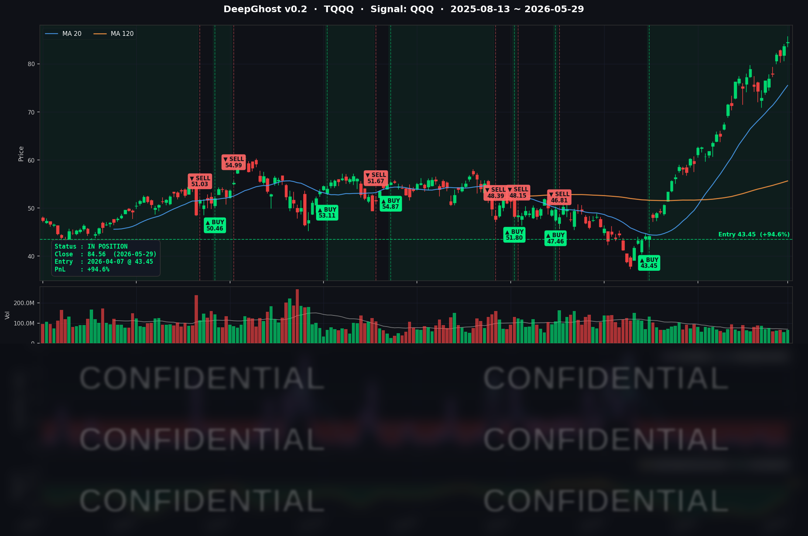

Dell 서버 부문 매출 실적이 나스닥 H/W 기업 상승을 이끌었습니다.
GPU/CPU/메모리에서 셋트로 관심이 이동하는 모양입니다.
금리는 여전히 종전 기대감을 반영하고 있습니다. 주식에는 좋은 환경입니다.
📊 오늘의 매매 신호
| 항목 | 내용 |
|---|---|
| 오늘 할 일 | ✅ 아무것도 안 해도 됩니다 |
| 포지션 상태 | 📈 TQQQ 보유 중 (IN POSITION) |
| 매수 진입일 | 2026-04-07 (52일째) |
| 진입가 → 현재가 | $43.45 → $84.56 |
| 현재 포지션 수익 | +94.61% |
TQQQ 시그널 — IN POSITION
현재 상태: 매수 포지션 유지 중 | 진입 후 누적 수익 +94.61%

오늘 Dell의 역대 최강 AI 서버 실적으로 (+33%) S&P 500의 9주 연속 주간 상승을 이끌었습니다.
오늘 미국 시장 — 시황 요약
지수 마감
| 지수 | 종가 | 등락률 |
|---|---|---|
| S&P 500 | 7,580.06 (web 기준) | +0.22% |
| Nasdaq Composite | 26,972.62 (web 기준) | +0.20% |
| Dow Jones | 51,032.46 (web 기준) | +0.72% |
| Russell 2000 (IWM) | $290.43 | -0.55% |
| QQQ | $738.31 | +0.37% |
| TQQQ (3x Nasdaq) | $84.56 | +1.05% |
S&P 500이 +0.22%로 5월 9주 연속 주간 상승 마감에 성공했습니다. 2023년 이후 최장 연승 기록입니다. 5월 월간으로는 S&P 500 약 +5%, Nasdaq 약 +8%로 강한 마감을 하였습니다. 다만 Russell 2000(소형주)이 -0.55%로 혼자 뒤처지며, 대형 빅테크 중심의 양극화 구도가 지속됐습니다.
국채 금리 & 연준
| 만기 | 수익률 | 전일 대비 |
|---|---|---|
| 3개월 | 3.590% | +0.5bp |
| 5년 | 4.160% | -1.7bp |
| 10년 | 4.455% | -2.6bp |
| 30년 | 4.985% | -2.6bp |
10년물 금리가 4.45% 수준에서 소폭 하락하며 성장주 밸류에이션 부담이 완화됐습니다. 미-이란 협상 진전과 인플레이션 완화 해석이 장기물 금리를 눌렀습니다. 단기물(3M) 대비 10년물이 높은 '정상 수익률 곡선(10Y-3M +86.5bp)' 상태는 경기 침체 우려가 없음을 반영합니다.
반면 30년물은 4.985%로 5% 근접을 유지 중입니다. 재정 적자 우려가 초장기물에 프리미엄을 붙이고 있어, 5%를 돌파할 경우 기술주에 구조적 부담이 될 수 있습니다.
연준 동향: Jeff Schmid 캔자스시티 연은 총재가 아이슬란드 컨퍼런스에서 "인플레이션이 5년 이상 목표를 상회하고 있다. 경계를 늦출 때가 아니다"라고 발언했습니다. 매파적 메시지로 연내 금리 인하 기대는 사실상 소멸, 시장은 첫 인하를 2027년으로 밀어냈습니다. 그러나 시장은 이를 "추가 인상이 없다"는 신호로 수용하며 성장주에 중립~우호적으로 반응했습니다. PCE +3.8% 고착화와 금리 동결 장기화는 TQQQ의 레버리지 비용을 높이지만, QQQ 상승 레짐이 유지되는 한 이 비용은 수익률에 가려집니다.
오늘의 핵심 이슈
1. Dell Technologies(DELL) — AI 서버 역대 최대 실적, +33% 폭등
Dell이 Q1 FY27(2~4월) 매출 $43.8B(YoY +88%), 비-GAAP EPS $4.86(YoY +214%)을 발표하며 역대 최대 분기 실적을 경신했습니다. AI 서버 수주잔고 $24.4B, 당분기 AI 서버 매출 $16.1B을 기록했고, FY27 전체 AI 매출 가이던스 약 $50B(YoY +100%)을 제시했습니다. 주가는 장중 +33% 폭등해 역대 최고 일일 상승률을 기록했습니다. "AI 인프라 투자가 기업의 실제 수요에 의해 뒷받침되고 있다"는 구조적 확인이자, TQQQ 포지션 보유의 펀더멘털 배경을 강화하는 사건입니다.
2. S&P 500 9주 연속 주간 상승 — 2023년 이후 최장 연승
5월 5주간의 랠리가 마무리됐습니다. AI 어닝 서프라이즈(NVDA·DELL·SNOW·CRM 연속), 미-이란 협상 진전에 따른 에너지 리스크 완화, 금리 안정화가 복합 작용한 결과입니다. 5월 월간 S&P 500 약 +5%, Nasdaq 약 +8%는 시장 레짐이 그 어느 때보다 강한 구간임을 나타냅니다.
3. Salesforce(CRM) Q1 FY27 — AI 에이전트 클라우드 수요 재확인
Salesforce가 Q1 FY27 매출 $11.1B(YoY +13%), GAAP EPS $2.42(YoY +52%)를 발표했습니다. AI 자율 에이전트 플랫폼 'Agentforce' 채택이 가속화되며 엔터프라이즈 AI 소프트웨어 수요의 구조적 성장을 재확인했습니다. 전일 Snowflake +36%에 이은 AI 소프트웨어 섹터 연속 서프라이즈입니다.
매크로 & 원자재
| 항목 | 수치 | 비고 |
|---|---|---|
| WTI (CL=F) | $88.57 | -0.12% |
| Brent (BZ=F) | $92.35 | -2.06% (이란 협상 기대 지속) |
| 금 (GC=F) | $4,524.80 | +1.74% (인플레이션 헤지 수요) |
| VIX | ~15.74 | 05-28 CSV 기준, 안정 구간 |
| 공포탐욕 지수 | 61 (Greed) | 탐욕 구간 유지 |
Brent 원유가 이란 협상 기대로 -2.06% 추가 하락했습니다. Trump 대통령이 협상이 "질서 있게 진행 중"이라 밝혔지만 "서두르지 말라"는 지침도 내려, 최종 합의 불확실성은 여전합니다. 협상이 결렬되면 유가 급반등과 시장 변동성 재확대가 예상됩니다. 금은 +1.74% 상승하며 PCE 인플레이션 헤지 및 지정학 불확실성 프리미엄을 반영했습니다.
주요 종목 동향
| 종목 | 종가 | 등락률 | 비고 |
|---|---|---|---|
| AAPL | $312.06 | -0.14% | 보합 마감, 빅테크 강세 흐름에서 이탈 없음 |
| NVDA | $211.14 | -1.45% | AI 인프라 강세 속 소폭 차익실현 |
| MSFT | $450.24 | +5.45% | Dell 연동 AI 소프트웨어 수요 강화 |
| GOOGL | $380.34 | -2.51% | 차익실현 압력 |
| META | $632.51 | -0.44% | $145B Capex 확대 우려, 차익실현 |
| AMZN | $270.64 | -1.23% | 특별 이슈 없이 차익실현 압력 |
| TSLA | $435.79 | -1.43% | FSD 안전 이슈 + 중국 판매 부진 지속 |
| NFLX | $86.02 | -0.39% | 기술주 랠리에서 소외 |
| AVGO | $446.77 | +4.73% | AI ASIC 수요 구조적 강세 |
| QCOM | $251.02 | +3.18% | 어닝 비트 이후 모멘텀 지속 |
| INTC | $114.68 | -5.14% | AI 인프라 소외, 6/1 청산 예정 |
주목할 점은 같은 '반도체' 섹터에서도 Dell의 AI 서버 랠리 수혜가 극명하게 갈렸다는 것입니다. AVGO(+4.73%, AI ASIC), MSFT(+5.45%, AI 소프트웨어)는 강세를 보인 반면, INTC는 파운드리 전환 스토리의 불확실성으로 홀로 -5.14% 급락했습니다. AI 인프라 투자 테마의 승자와 패자가 갈리는 선별장세가 본격화되고 있습니다.
Ghost.AI — Quantitative AI Investment
Model: DeepGhost v0.2 | Transformer-Based Deep Learning
Coverage: 13 tickers | Updated every trading day after US market close
⚠️ 본 자료는 정보 제공 목적으로만 작성되었으며 투자 권유가 아닙니다. 모든 투자의 책임은 투자자 본인에게 있습니다. 과거 성과가 미래 수익을 보장하지 않습니다.
[유의사항]
고스트에이아이 주식회사는 「자본시장과 금융투자업에 관한 법률」 제101조에 따른 유사투자자문업자로 등록된 사업자입니다.
- 본 서비스는 불특정 다수를 대상으로 발행되는 단방향 정보 제공 서비스이며, 투자자 개인의 재산 상황·투자 목적·위험 선호도를 반영한 개별 투자 조언이 아닙니다.
- 고스트에이아이 주식회사는 고객과 쌍방향 의사소통(개별 상담, 맞춤형 자문 등)을 제공하지 않습니다.
- 본 콘텐츠는 투자 권유 또는 매매 주문의 청약·청약의 권유에 해당하지 않으며, 최종 투자 판단 및 그에 따른 손익의 책임은 전적으로 투자자 본인에게 있습니다.
고스트에이아이 주식회사 | 유사투자자문업 등록번호: 제2025-000호